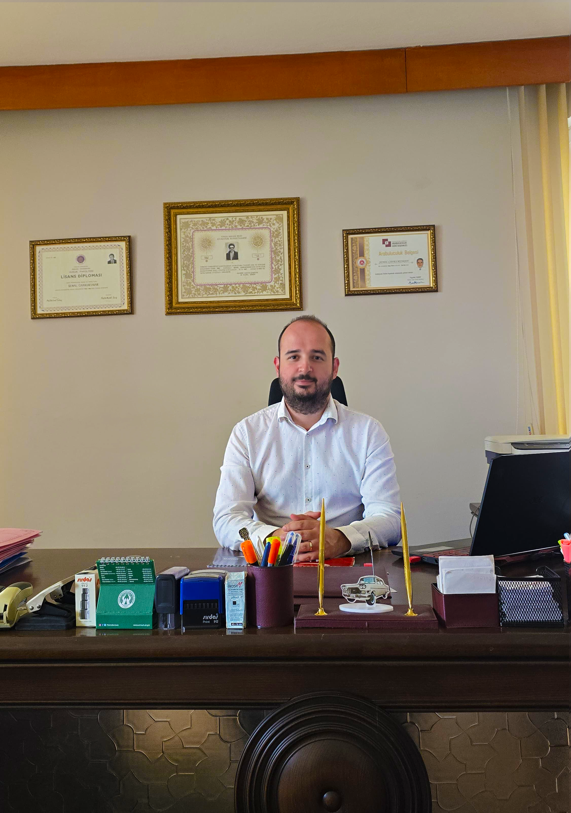

Advocate Anıl Güzel, provides legal represantation and consultancy across 12 fields of law for individual and corporate clients at his office based in Muratpaşa, Antalya.

We follow a transparent, strategic, and meticulous roadmap from the initial consultation to the closure of the case.
We listen to the legal and factual dimensions of the dispute in detail and conduct an initial assessment in light of the information and documents you provide.
We determine the litigation or settlement strategy that will achieve the fastest and most effective results within the framework of legislation.
We meticulously conduct every stage of the lawsuit filing, petitions, correspondence, court or settlement processes, and keep you regularly informed.
Upon completion of the process, we finalize the enforcement, execution of the judgment, and delivery of rights, and close the file.
o, you do not necessarily have to be here. For most legal processes, we can manage your case through a Power of Attorney (Vekaletname) issued from a Turkish notary, or via Turkish consulates abroad. Documents and communications can be handled digitally, saving you time and travel.
Yes, absolutely. All our consultations, legal evaluations, and correspondence can be conducted entirely in English. We ensure that you fully understand every single step of your legal process without any language barrier.
The duration varies depending on the type of case and the workload of the courts. For instance, residence permit or title transfer procedures are completed relatively quickly, while contested court litigations may take several months. During our initial consultation, we provide a realistic timeline based on your specific file.
Depending on your matter, essential documents generally include your passport copy, a power of attorney, and any relevant documents related to your dispute (such as contracts, title deeds, bank receipts, or official notices). We will provide you with a tailored checklist after reviewing your case.
Our fees are determined in accordance with the official Minimum Wage Tariff published by the Union of Turkish Bar Associations, based on the scope and nature of the work. We always establish a clear, written fee agreement beforehand. Aside from court expenses (such as filing fees or expert witness costs), there are no hidden fees.
Yes. Foreign nationals can legally acquire real estate in Turkey under reciprocal laws and apply for short-term residence permits or citizenship-by-investment programs, provided that specific statutory requirements are met. We guide you through the entire regulatory and application process.
Judicial proceedings in Antalya are primarily conducted within the Antalya Courthouse. Central districts such as Konyaaltı, Muratpaşa, Kepez, and Döşemealtı do not have separate courthouses; disputes in these regions are handled at the central courthouse.
Some districts outside the center have their own courthouses (Alanya, Manavgat, Serik, Kaş, Kumluca, Finike, Gazipaşa, Korkuteli, and Elmalı). When taking on a file, an attorney first examines jurisdiction and venue rules. The lawsuit is brought to the correct courthouse based on criteria such as the location of the immovable property, the defendant's place of residence, or the place of performance of the contract.
Appellate review against the decisions of first-instance courts is carried out by the Antalya Regional Court of Justice. In administrative disputes, jurisdiction lies with the Antalya Administrative Courts; therefore, the determination of application deadlines and authorities is of great importance.
The practice of law is regulated by the Attorneyship Law No. 1136, which mandates registration on the bar association registry. The primary verification point for individuals seeking an attorney is whether the person consulted is registered on the relevant bar's registry, which can be verified through lists published by bar associations. Attorneys operating in Antalya are registered with the Antalya Bar Association, and each attorney has a registration number.
A transparent legal process relies on the relationship of trust between the client and the attorney. The fee tariff, stages of the file, and the strategy to be followed are clarified during the initial consultation, ensuring mutual agreement. Pricing is determined based on the nature of the dispute and the scope of the file, provided it is not lower than the Minimum Wage Tariff for Attorneys published by the Union of Turkish Bar Associations.
Due to the ethical rules of the legal profession, no attorney or law firm can give an absolute guarantee or commitment regarding the outcome of a lawsuit. The probable course of the process and potential possibilities are evaluated within a legal framework, and outcomes are not promised in advance.
A power of attorney is the official document that enables an attorney to carry out legal procedures on behalf of their client. In addition to a general litigation power of attorney, specific powers may need to be added for situations requiring special authorization, such as divorce, real estate sales, settlement, or release.
For the legal process to proceed smoothly, it is essential that developments such as hearing dates, expert reports, and interim decisions are shared regularly. Transparency in file tracking directly supports the sound management of the dispute.
Uninterrupted flow of information is a critical element to ensure that legal processes progress according to the planned schedule and that parties do not suffer any loss of rights. Every stage is meticulously followed, and clients are kept regularly informed.
Team of experts in legal consultancy.
They were helpful in every way and sincerely answered all my questions.
Law firm that inspires confidence with its professional approach.
You can visit our Contact page for detailed information and directions.